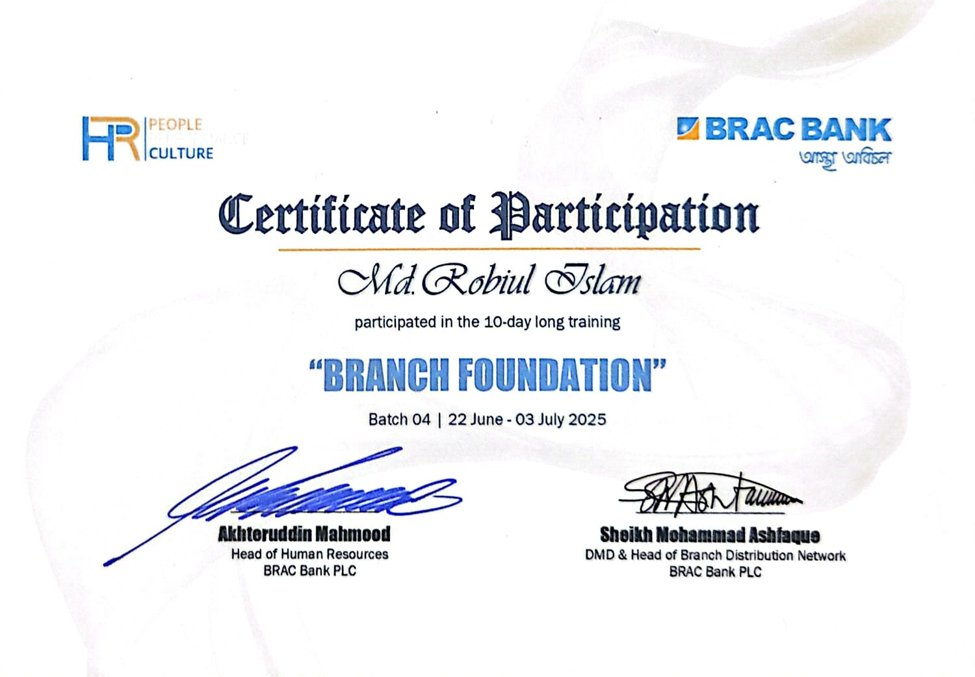
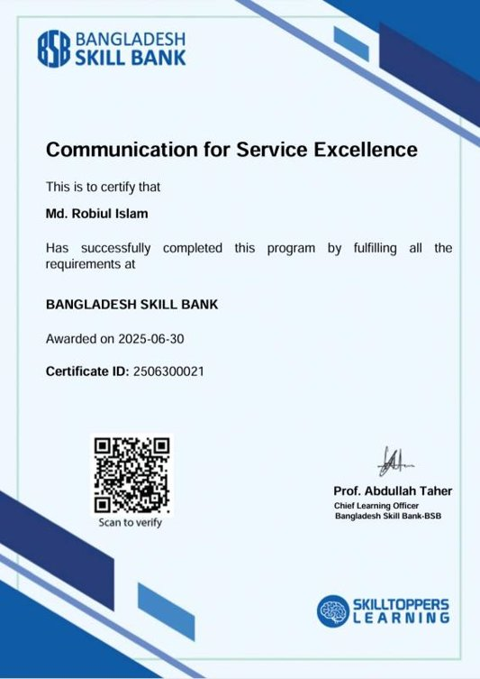
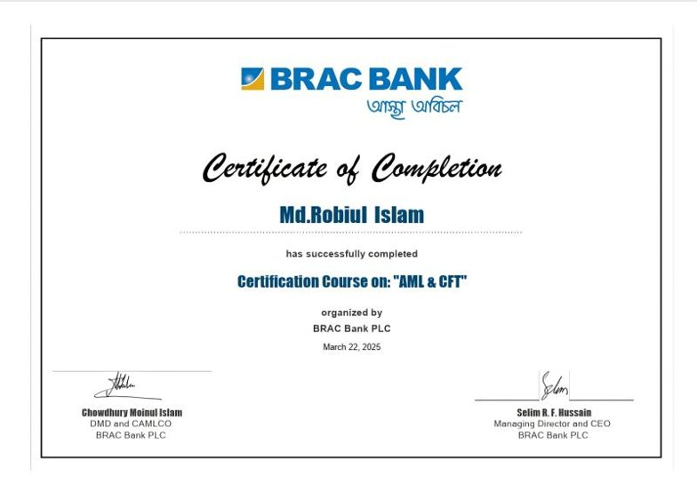
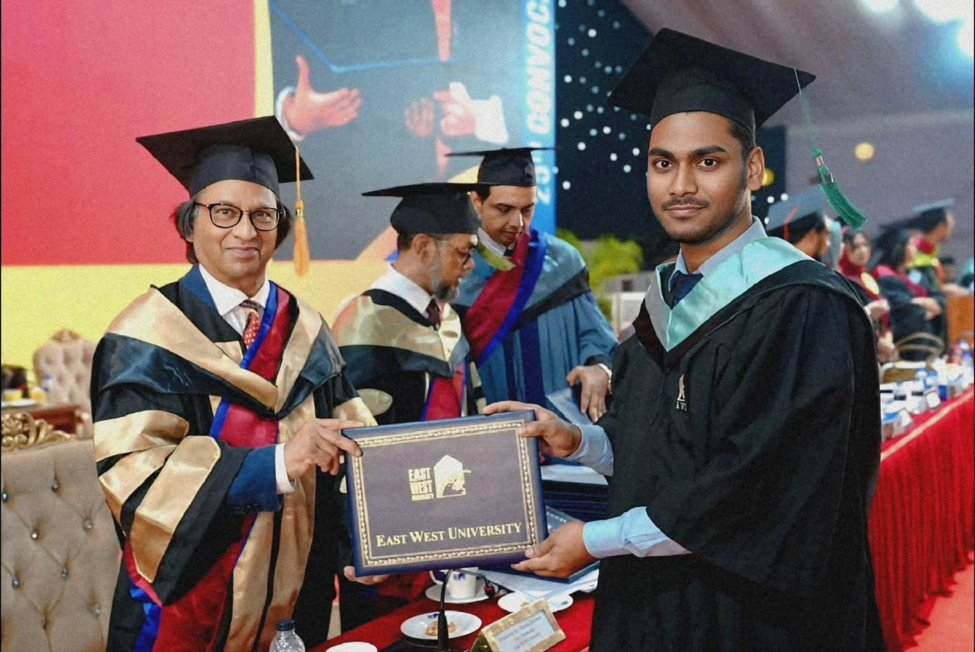
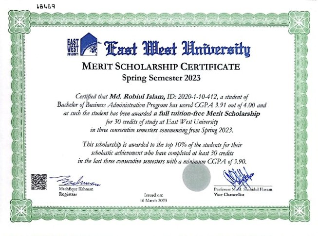
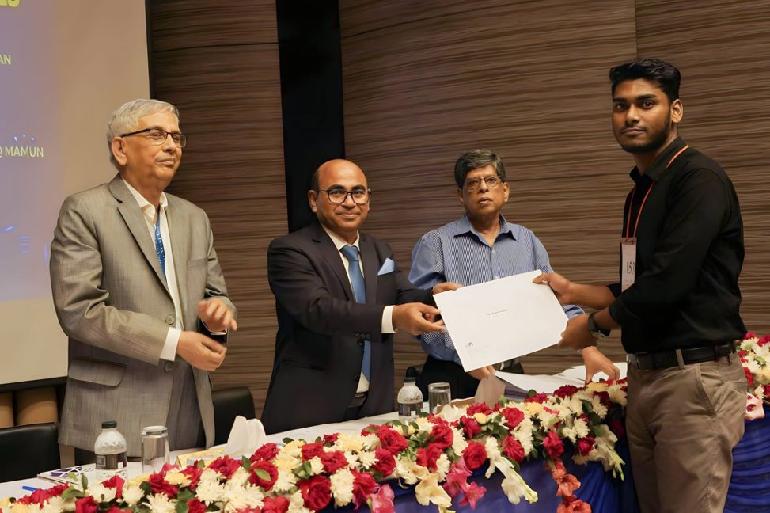
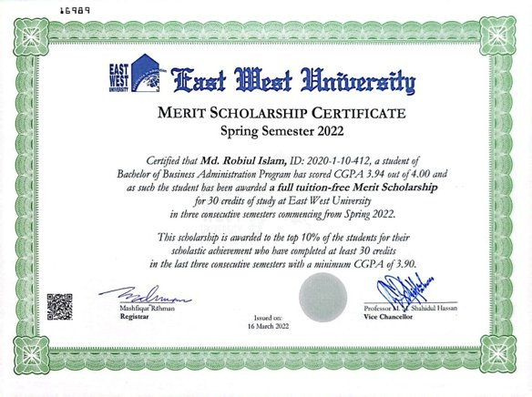

Robiul Islam
Officer, BRAC Bank PLC · ACCA Level 2 (6/13) · Aspiring Business Analyst
I turn banking operations data into clear, decision ready insight, combining hands on branch banking and compliance work with Excel, SQL and Power BI.
About
About Me
I am a banking professional at BRAC Bank PLC with a strong foundation in accounting from my BBA and MBA, and a growing passion for business analysis. While working in branch banking, I realised that what excites me most is not just managing day to day operations. It is understanding the data behind them and using it to uncover insight into performance, risk, compliance and customer behaviour.
To strengthen my analytical skills, I am currently progressing through the ACCA qualification, with six of thirteen papers completed, while building hands on experience with Advanced Microsoft Excel, SQL and Power BI. I am developing practical skills in data analysis, dashboard development, KPI reporting, data visualization and business intelligence to help drive better business decisions.
Working in banking has taught me to think analytically in fast paced, real world environments. From identifying transaction patterns and monitoring compliance risk, to understanding customer behaviour and operational performance, I have learned how to turn complex business challenges into structured, data driven insight. I enjoy cleaning and transforming data, building interactive dashboards, analysing trends and presenting insight that supports informed decision making.
My goal is to build a career as a Business Analyst, where I can combine my banking knowledge, accounting background and analytical skills to solve business problems, improve processes and help organisations make smarter, data informed decisions. I am always happy to connect with professionals in banking, finance and data analytics.
Education
Academic Background
Jan 2024 to Oct 2025
Master of Business Administration, Accounting
East West University, Dhaka
CGPA: 3.92 out of 4.00
Jan 2020 to Dec 2023
Bachelor of Business Administration, Accounting
East West University, Dhaka
CGPA: 3.83 out of 4.00 · Magna Cum Laude
May 2017 to Apr 2019
Higher Secondary Certificate, Business Studies
Birshreshtha Munshi Abdur Rouf Public College
GPA: 5.00 out of 5.00
Jan 2015 to May 2017
Secondary School Certificate, Science
Mitali Bidyapith High School
GPA: 5.00 out of 5.00
Experience
Professional Experience
Officer
Nov 2024 to Present
BRAC Bank PLC · Full time
- Manage day to day branch banking operations including customer onboarding, KYC documentation and transaction processing for 1100+ customers per month
- Support AML/CFT compliance workflows including transaction monitoring, STR/SAR documentation and regulatory reporting aligned with Bangladesh Bank and BFIU guidelines
- Built and maintain internal tracking tools in Excel to flag compliance documentation gaps, reducing manual review time
Graduate Teaching Assistant
Jun 2024 to Nov 2024
East West University · Contract
- Supported instructors with grading assignments, providing tutoring services and facilitating class discussions
- Assisted with administrative functions including student communications, procedural demonstrations and exam supervision
- Participated in departmental meetings and offered mentorship to students
Undergraduate Teaching Assistant
Jun 2023 to Dec 2023
East West University · Contract
- Supported instructors through tasks such as grading, tutoring and facilitating discussions
- Assisted with administrative duties including communication with students, demonstrating procedures and supervising exams
- Attended departmental meetings and provided mentorship to students
Project
Featured Work
Comparative Financial Performance Analysis, Bangladeshi Banking Sector (FY2021 to FY2025)
Applied core financial analytics techniques including CAGR, Year over Year growth, profitability ratios, asset quality trends, earnings quality analysis and market share analysis, to five years of publicly disclosed financials from BRAC Bank, City Bank, Eastern Bank, DBBL and Prime Bank, to identify which banks are performing well and which show signs of weakness.
Delivered as a structured, report style dashboard suitable for a portfolio, an academic submission or an investor and analyst briefing, including KPI cards, dynamic charts, Year over Year growth indicators and CAGR analysis.
View on GitHub →Recognition
Awards & Certification
Professional Certification
- ACCA · Association of Chartered Certified Accountants, in progress, 6 of 13 papers completed
- Branch Foundation Training · BRAC Bank PLC, Batch 04, June to July 2025
- Communication for Service Excellence · BRAC Bank PLC
- Code of Conduct · BRAC Bank PLC, March 2025
- Basics of Information Security · BRAC Bank PLC, March 2025
- AML & CFT · BRAC Bank PLC, March 2025
- SHARP · BRAC Bank PLC, October 2025
- FinXcel · Excel Based Training & Competition, 3rd Position, 2023



Academic Awards & Scholarships
- Magna Cum Laude · East West University, 2024
- Merit Scholarship · Spring 2023 to Fall 2023
- Merit Scholarship · Spring 2022 to Fall 2022
- Medha Lalon Scholarship · Spring 2021 to Fall 2021
- Admission GPA Scholarship · Spring 2020 to Fall 2020




Student Leadership
- Sub Executive, Graphics Designer · EWUDC, 2020 to 2021
- Team Lead, Promotional Department · EWUDC, 2021 to 2022. Created promotional content, managed online promotional media and trained volunteers
Skills
Software & Tools
Professional Skills
Writing
Blog
New writing is on the way. Check back soon for reflections on banking operations, compliance, and lessons learned while building data driven dashboards.
Contact
Get in Touch
For collaboration, opportunities in data analytics and business analysis, or professional enquiries, please feel free to reach out.